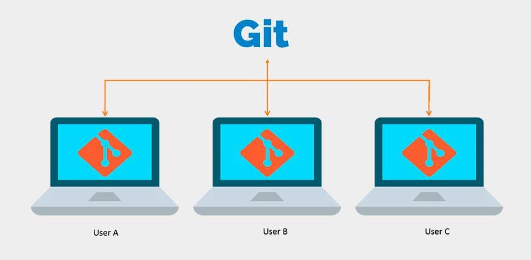
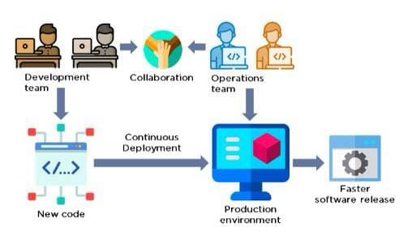

Що таке Git та Github
Зробили: Гладкевич Андрій, Скоробагатько Володимир та Максим Дешпетко
Життя програміста – це не тільки сидіння наодинці в темній кімнаті, яка освітлюється лише світлом монітора. Це ще й спілкування з іншими програмістами, соціальна участь в різних спільнотах. Ось чому з’явилися на світ і стали популярними такі речі як Git та Github. Git – це програмне забезпечення для контролю версій, яке робить співпрацю з колегами по команді дуже простим. Простим, як тільки ви пройдете початкову стадію навчання. І сьогоднішня стаття призначена для початківців, які хочуть дізнатися про основи роботи з Git і Github.
Що таке Git?
Git – це програмне забезпечення для контролю версій. Він був створений Лінус Торвальдсом (хлопцем, який винайшов Linux). Вам не потрібно використовувати Linux, щоб використання git – він також працює на Windows і Mac. Git дозволяє вам відстежувати кожну ревізію (зміну), яку ви і ваша команда робите під час розробки програмного забезпечення. Ви всі використовуєте один репозиторій коду, який працює незалежно, а потім об’єднується. Вам також не потрібно постійно підключатися до сховища, тому що проект зберігається і локально на кожній машині, і віддалено (як варіант, на Github). Git є особливим (і в значній мірі обов’язковим), тому що ви можете повернутися до будь-якої попередньої версії вашого коду, перейти на іншу гілку і розробити певну функцію, не зачіпаючи що-небудь або кого-небудь ще, і виключити можливість пошкодження даних через їх розподіл. Він також забезпечує легко реалізоване шифрування, а також асинхронні, нелінійні робочі процеси, тому незалежно від того, де ви знаходитесь, ви можете працювати з потрібними розділами вашого проекту.
Словник термінів, пов’язаних з Git
Коли ви вперше починаєте використовувати git, він може вас налякати. Команди та концепції можуть здатися зовсім чужими, якщо в минулому ви ніколи не використовували будь-яку платформу контролю версій. Тому, давайте коротко розглянемо основні терміни Git.
Репозиторій (repository)
Часто згадується як репо. Репозиторій – це колекція файлів і папок, які ви використовуєте для відстеження git. Сховище складається з усієї історії змін вашої команди в проекті. Це той великий склад, на якому зберігається код, який додали ви і ваша команда.
Github
Найпопулярніше віддалене сховище для git-репозиторіїв. Особливості: він дозволяє вам встановлювати права доступу до проектів, відстежувати і відправляти помилки, приймати запити на поліпшення, підписуватися на повідомлення сховища, використовувати графічний інтерфейс, а не командний рядок. Репо за замовчуванням відкриті, але платні акаунти можуть мати приватні репозиторії.
Фіксація (commit)
Думайте про це як про збереження вашої роботи. Коли ви фіксуєте репозиторій, це схоже на те, що ви збираєте файли в тому вигляді, в якому вони існують в даний момент, і поміщаєте їх в капсулу часу. Фіксація буде існувати тільки на вашому локальному комп’ютері, поки вона не буде відправлена на віддалений репозиторій.
Відправлення (push)
Фіксація поміщає ваші файли в капсулу часу, а відправка – це те, що запускає капсулу в космос. Відправлення – це, по суті, синхронізація ваших збережень (фіксацій, коммітів) з хмарою (знову ж таки, ймовірно, Github). Ви також можете використовувати кілька коммітів одночасно. Ви можете працювати в автономному режимі, зробити багато роботи, а потім передати все це на Github.
Гілка (branch)
Уявіть свій git-репо у вигляді дереві. Стовбур дерева, програмне забезпечення, яке запускається, називається майстер-гілкою (Master Branch). Це те, що є онлайн. Гілки цього дерева називаються, як не дивно, гілками. Це окремі екземпляри коду, який відрізняється від основної бази коду. Ви можете відгалузити одну функцію або експериментальний патч. Розгалужуючись, ви можете зберегти цілісність основного програмного забезпечення і мати можливість відкотитися, якщо зробите щось зовсім божевільне. Це також дозволяє вам працювати над своїм завданням, не впливаючи на вашу команду (або вона на вас).
Об’єднання (merge)
Коли гілка виправлена, не містить помилок (наскільки ви принаймні можете судити) і готова стати частиною первинної бази коду, вона буде об’єднана з головною гілкою. Об’єднання – це те, на що це схоже: злиття двох гілок. Будь-який новий або оновлений код стане офіційною частиною кодової бази. Той, хто відгалужується від точки злиття, також буде мати цей код в своїй гілці.
Клонування (clone)
Клонування репо – це майже те ж саме, як і звучить. Воно бере весь онлайн-репозиторій і робить точну копію на вашому локальному комп’ютері. Вам потрібно буде зробити це по ряду причин, і не в останню чергу для збереження сумісності.
Відгалуження (fork)
Форкінг багато в чому схожий на клонування, тільки замість того, щоб робити копію існуючого репо на вашому локальному комп’ютері, ви отримуєте абсолютно новий репо цього коду під своїм власним ім’ям. Ця функція в основному використовується для взяття існуючої кодової бази і перехід з нею в абсолютно новому напрямку, що часто трапляється в програмному забезпеченні з відкритим вихідним кодом; розробники бачать базову ідею, яка працює, але хочуть піти іншим шляхом. Форкінг дозволяє цьому статися. Ви також можете взяти участь в репозиторії іншого розробника, як у своїй особистій пісочниці. І якщо ви робите щось, що, на вашу думку, може йому сподобатися, ви можете зробити попередній запит на об’єднання.
Запит на підтвердження (Pull Request)
Запит на підтвердження – це коли ви відправляєте запит з внесеними вами змінами (або в гілці, або в відгалуженні), які повинні бути перенесені (або об’єднані) в основну гілку (Master Branch) сховища. Це великий час, і тут відбувається диво. Якщо запит на підтвердження буде схвалений, ви офіційно внесете свій внесок в програмне забезпечення, і Github завжди буде показувати, що саме ви зробили. Однак, якщо запит відхиляється з якої-небудь причини, ревізор зможе дати відгук про те, чому запит був відхилений і що ви можете зробити, щоб він був прийнятий.
Початок роботи з Git і необхідні команди
Тепер, коли у вас є більш чітке уявлення про те, що таке git, прийшов час покопатися глибше і забруднити руки. В даному уроці ми припускаємо, що ви використовуєте командний рядок для взаємодії з git. Звичайно, для цього є і git-клієнти з графічним інтерфейсом (і Github навіть дозволяє вам робити практично все через свій веб-інтерфейс), але тут ми це розглядати не будемо.Основи роботи з терміналом або командним рядком описані тут.
Як встановити Git
На щастя, встановити git дуже просто, незалежно від того, чи працюєте ви на Linux, Mac або Windows. Для Linux відкрийте термінал і введіть команду sudo apt-get install git-all (якщо ви перебуваєте в Ubuntu). У Windows все просто. Ви завантажуєте інсталятор і запускаєте його. На Mac вам просто потрібно відкрити термінал і набрати git. Якщо git не встановлено, ви побачите пропозицію встановити його. Натисніть кнопку Встановити, і все готово. Бачите? Все дуже просто!